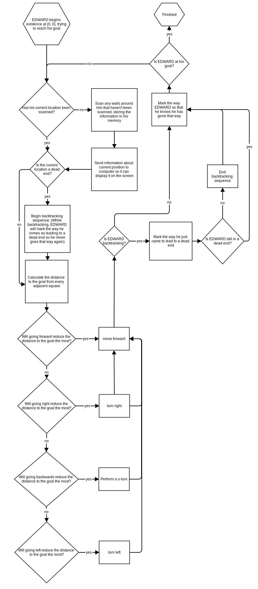

EDWARD (Electronically Driven Wireless Autonomous Roving Droid) is a robot I began building in 8th grade. He navigates through a maze by mapping out its environment in its mind and using the Pythagorean Theorem to choose the best route. Here are the different components that make up EDWARD:
Electronics

Arduino Uno
The brain of EDWARD. Contains the main program and controls everything from driving motors to communicating with the computer.

Ultrasonic Ping))) Sensor
EDWARD uses this to map his world and store it in his memory.

HS55 Servo Motor
Moves the ping sensor left and right so that all sides of every square of the maze can be scanned.

Continous Rotation Servo
Drives the wheels to turn EDWARD, who has a ball-bearing as a third point of contact.
Logic
Software
Class RobotContains classes that manipulate the physical parts of the robot as well as class Map to remember everything the robot has learned. This class also remembers some things itself. |
||||
Class LocomotionCoordinates the two wheels of the robot. |
Class Motorized SensorSyncronizes the ping sensor and the motor on which it is mounted. |
Class MapStores information about the maze. It consists of a grid of Class Squares. |
||
Class Motor RightThis motor can turn both directions at varying speeds. |
Class Motor LeftThis motor can turn both directions at varying speeds. |
Class Ping SensorSends out a pulse of sound. The time it takes to bounce off an object is used to infer the distance to the wall. |
Class Neck MotorThis motor can only turn 180 degrees, but this is enough for the ping sensor to scan on all sides. |
Class SquareKeeps track of where walls are; if the square has been mapped yet; if an opening has been passed through by the robot; if an opening leads to a dead-end; and where the square was first entered. |